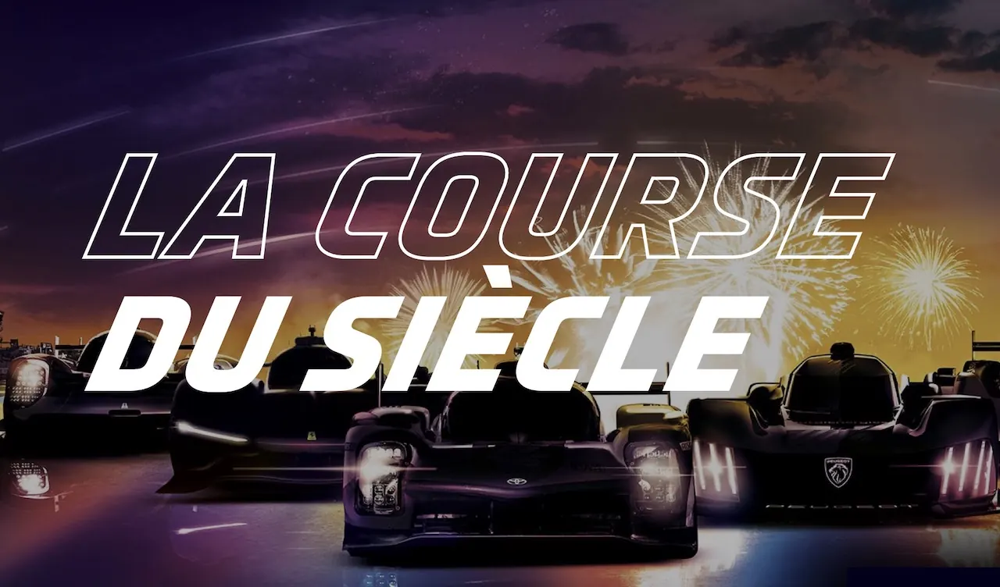
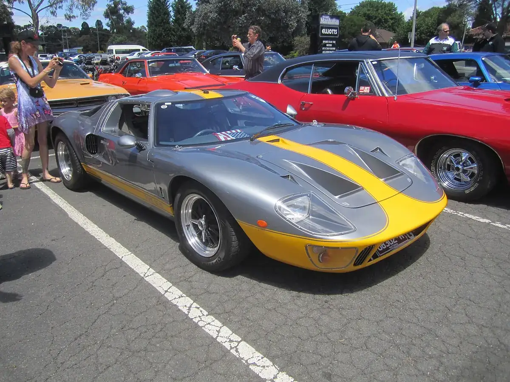
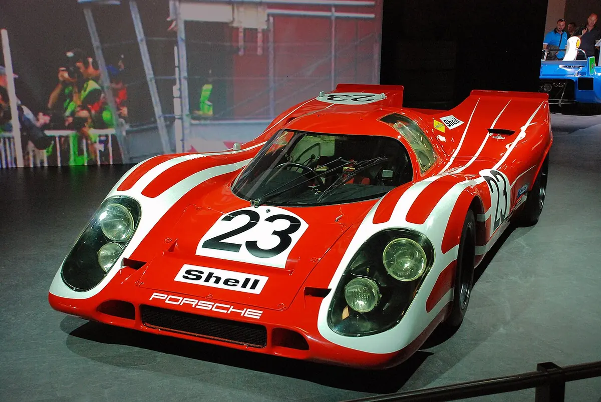
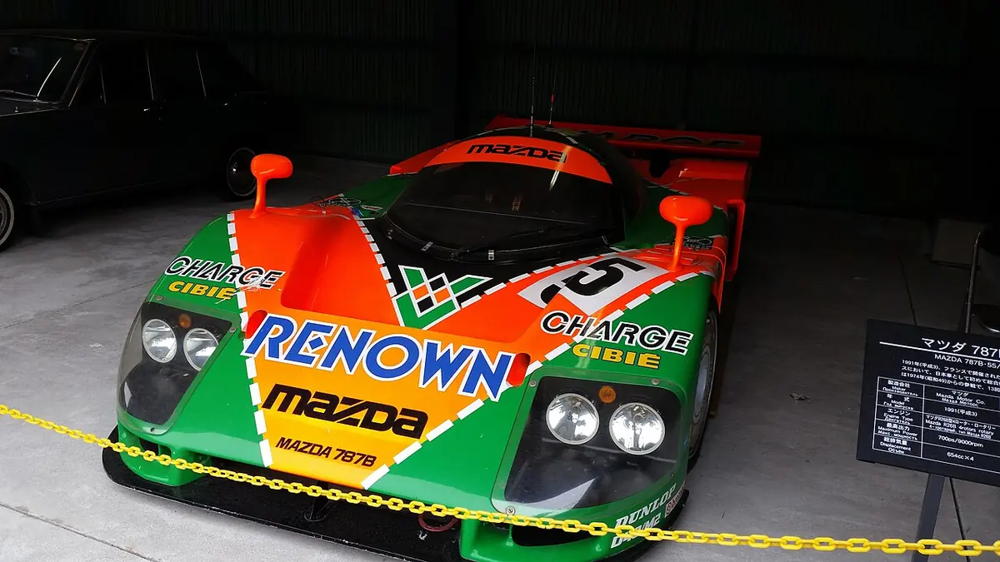
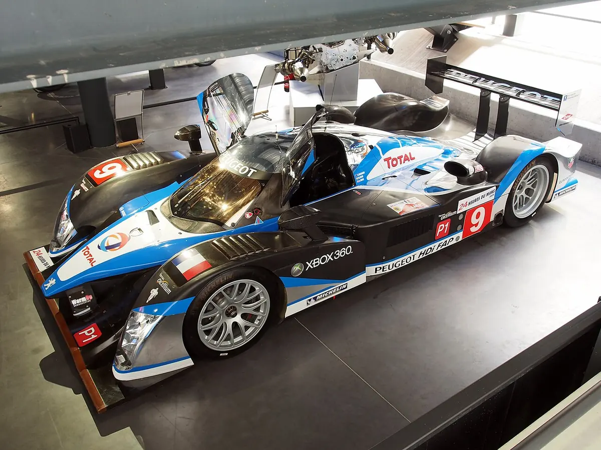
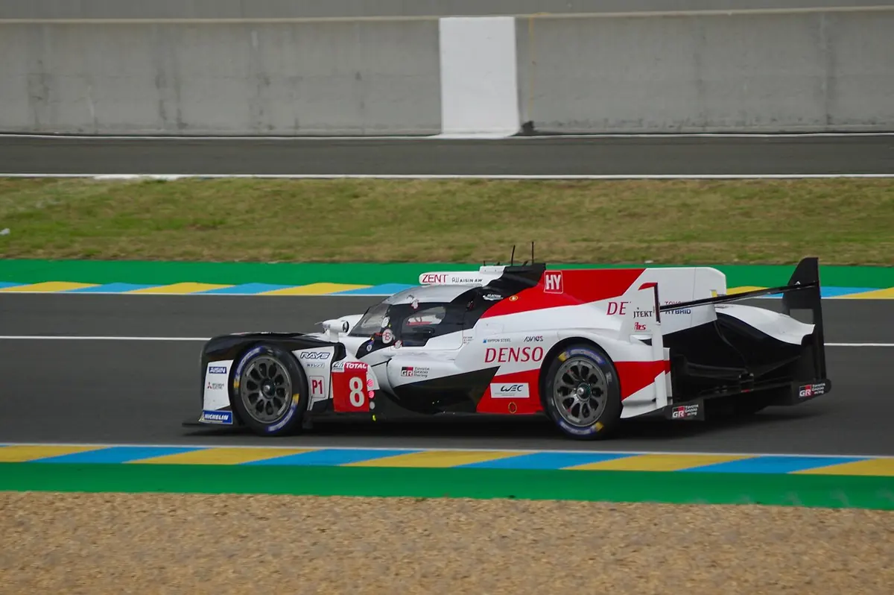

Un sièclede légende
Des pionniers de 1923 aux hypercars hybrides, les moments qui ont construit la course la plus célèbre du monde.
- 1923
La première édition
Les 26 et 27 mai, 33 voitures prennent le départ. André Lagache et René Léonard l'emportent sur une Chenard & Walcker.
 1924
1924Les « Bentley Boys »
Bentley gagne pour la première fois. Entre 1924 et 1930, la marque anglaise remporte cinq victoires grâce à ses pilotes fortunés et audacieux.
- 1936
Une année sans course
Des grèves en France empêchent l'organisation de l'épreuve. La course sera aussi interrompue de 1940 à 1948 à cause de la guerre.
 1955
1955La plus grande tragédie
Un terrible accident fait plus de 80 morts parmi les spectateurs. La sécurité des circuits est ensuite profondément revue.

1966Ford bat Ferrari
Après des années de domination de Ferrari, Ford signe un triplé avec la GT40. Cette rivalité a même inspiré un film.
- 1969
La fin du départ en courant
Jacky Ickx traverse la piste en marchant pour protester contre le départ « type Le Mans » où les pilotes couraient vers leur voiture. Il gagne quand même ! Ce départ est abandonné l'année suivante.

1970Première victoire Porsche
La légendaire 917 offre à Porsche la première de ses 19 victoires, un record.
 1978
1978La France gagne avec Alpine
La Renault-Alpine A442B de Didier Pironi et Jean-Pierre Jaussaud s'impose.

1991Le moteur rotatif de Mazda
La Mazda 787B devient la première voiture japonaise et la seule à moteur rotatif à gagner au Mans. Son cri est resté célèbre.
- 1999
BMW gagne
La V12 LMR offre à BMW son unique victoire au classement général.
- 2006
La première victoire d'un diesel
L'Audi R10 TDI gagne avec un moteur diesel. Audi remporte 13 victoires entre 2000 et 2014 ; en 2012, la R18 e-tron quattro devient la première hybride victorieuse.

2009Peugeot détrône Audi
La Peugeot 908 HDi FAP signe un doublé et offre au Lion sa troisième victoire.
 2013
2013Le record de Tom Kristensen
Le Danois remporte sa 9e victoire, un record absolu. On le surnomme « Monsieur Le Mans ».
- 2016
Le cauchemar de Toyota
En tête à quelques minutes de l'arrivée, la Toyota n°5 tombe en panne dans le dernier tour. Porsche s'impose.

2018Toyota enfin vainqueur
Avec Fernando Alonso, Sébastien Buemi et Kazuki Nakajima, Toyota gagne pour la première fois. Cinq victoires suivront jusqu'en 2022.
- 2021
L'ère Hypercar commence
La nouvelle catégorie Hypercar remplace les LMP1. Toyota gagne avec la GR010.
 2023
2023Le centenaire
Ferrari revient et gagne dès sa première participation avec la 499P, devant plus de 300 000 spectateurs.
 2026
2026Le retour de Toyota
Après trois victoires Ferrari, la Toyota TR010 n°7 l'emporte devant la BMW n°20.